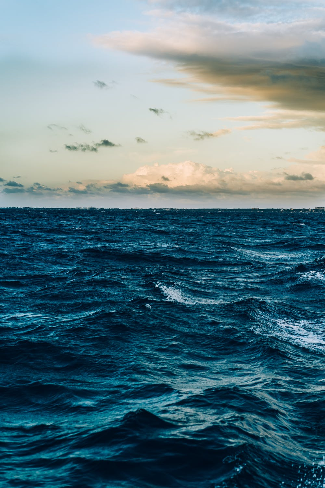
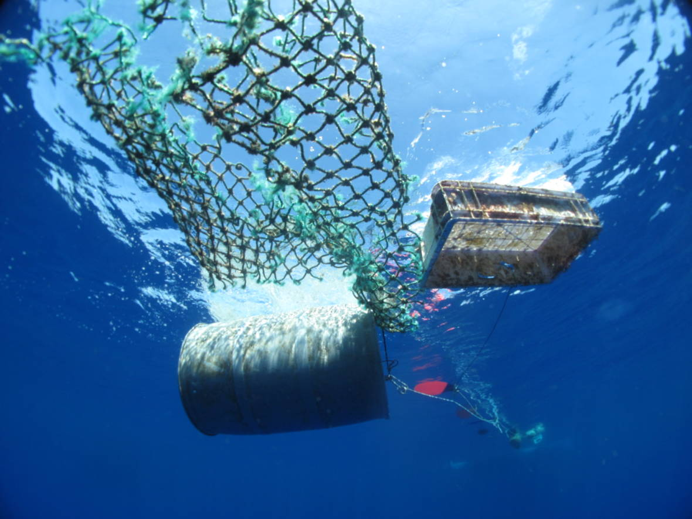
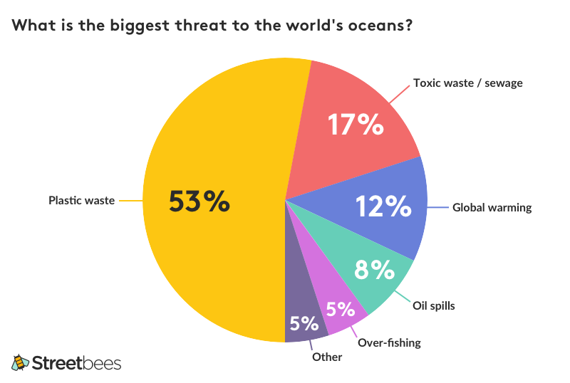
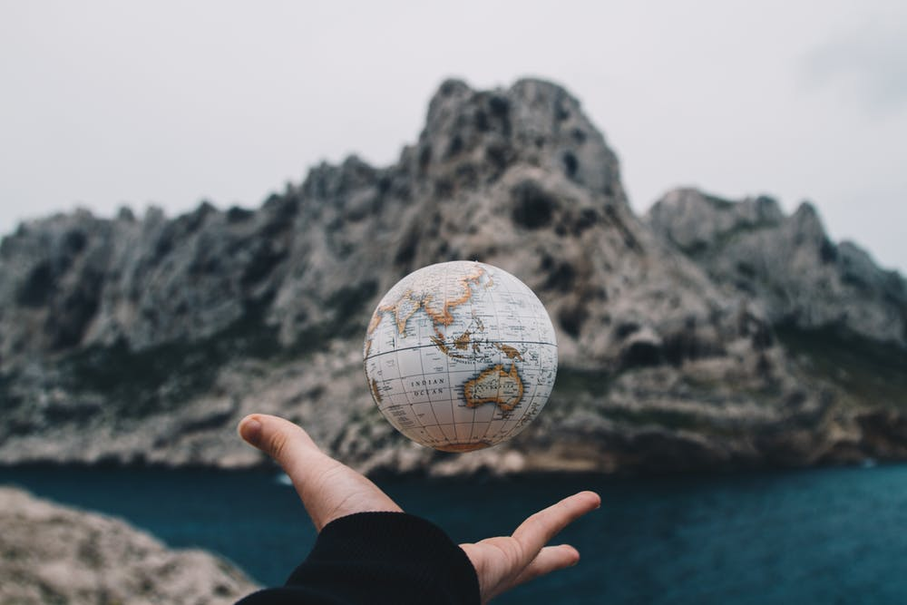
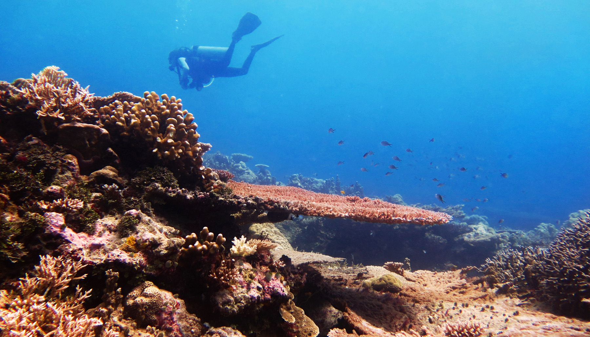

Over the past decade or so, oceans and other bodies of water have gotten significantly worse. But why? Most people are very aware of the impact they are making on the enviornment, but don't think they have the resources to make a difference. Most people don't realize that what they do does make an impact. For example, if you never litter or throw trash in the water; that trash will never harm an ecosystem. And another thing to remember, one person isn't one person if 7 billion people are doing the same thing to save the Earth.
In the ocean having trash is now the norm. Animals have adapted to living on these trash piles. For example, trash island. Also, pieces of trash and plastic that get in the ocean can get stuck to animals and can harm them. Some animals even think that pieces of trash are food and will then eat it. Many sharks will eat the easiest thing to catch in order to save energy. Due to this, the already small number of sharks is decreasing more and more.
Many people around the world enjoy seafood. But unfortunetly, 46% of the pollution in the ocean is fishing gear ("World Without Fish" by Mark Kurlansky). This is from both commercial and personal fishing. Most of the time, people will be fishing, but their net will come loose and many don't try to retrive the net, but will get a new net and try again. This causes a lot of pollution and it disturbs the ocean floor.
How these nets work is that fishermen will drag the net on the ocean floor to get mussles. While they get the mussles or other animals they will disturb the ocean floor and cause many animals to be hurt, collected as well, or moved to an unfamiliar ecosystem. Straws aren't an issue, because they contribute to less then 1% of waste in the ocean. You should still try and not use straws because even though it is less than 1% plastic waste is over 50% of the problem with pollution in the ocean. The real solution is to not use a lot of plastic in your everyday life.
Much of global warming is caused by non-renewable fossil fuels such as gas. See home page for more about fossil fuels and alternatives. The issue with the ocean global warming and oceans is that the water is heating up and many animals aren't able to survive in that tempature water. This has already affected many species of fish and other marine life. The only spieces that is thriving is the jellyfish. This is because jellyfish do better in warm waters and they live deeper than some other spieces that like warm water. The jellyfish also can reproduce at very fast speeds, so if we don't do anything about global warming, most other marine spieces will die off and jellyfish will overpopulate and turn the oceans a pinkish-orange ("World Without Fish"). Also, the ice caps are melting.
Of course there is no way to beat global warming, but there are ways to stop creating more problems and try to reverse the effects. One way, that seems so obvious is to carpool more. It seems really hard to do, but there are more ways to get to school and work than just drive. Some options are: walk or bike if you are close enough, take the bus, take the train, go into the area you work with a friend, drive to work with a coworker, or take the ferry if you are close enough. Many people might drive to the train or boat but that is still better than driving all the way to work. You are still cutting down the pollution from your car. Most people might say that taking the boat or train is basically the same as driving, or even worse for the enviornment, but the train or boat isn't taking one person. It is taking several people at a time, saving the gas it would have taken if just one person drove to work/school.
I hope you can take something out of this page and try to find a way to create a better Earth. Please share our website to create a better world.
